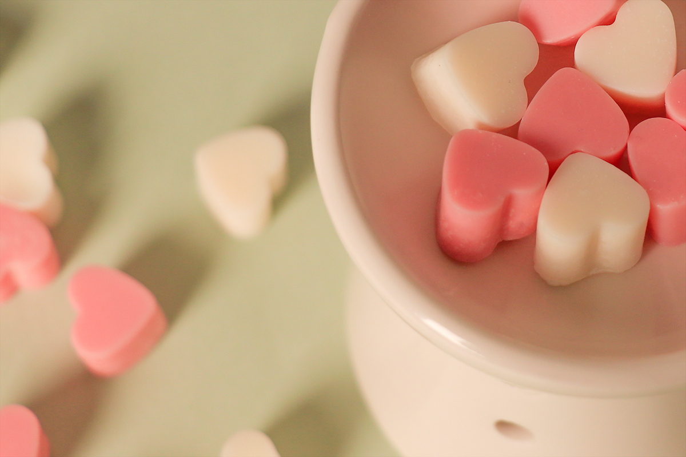
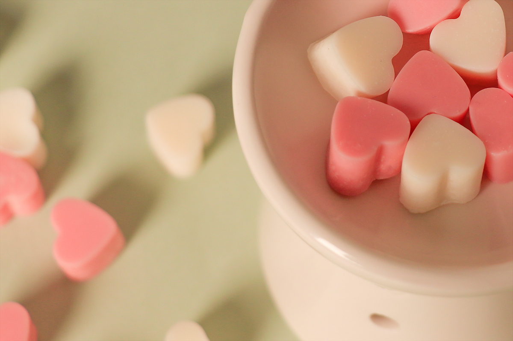

About Cube Candle
우리는 보통 캔들하면, 심지에 붙을 붙여 녹이는 캔들을 생각합니다
하지만 아이나, 애완동물이 있는 집에서는 불을 붙이기가 걱정이 되죠
그래서 불을 피우지 않고도 캔들을 녹일 수 있는 캔들 워머가 나오게 되었습니다
워머는 열로 캔들을 천천히 녹이면서 향을 퍼지게 하기 때문에 더 이상 심지에 불을 붙이지 않아도 됩니다
큐브 캔들은 캔들 왁스를 담을 용기가 필요 없고, 꼭 큐브 모양일 필요도 없기 때문에 다양한 형태의 캔들을 만들 수 있습니다
자, 이제 내 맘대로 미니 큐브 캔들을 만들어볼까요?


 
